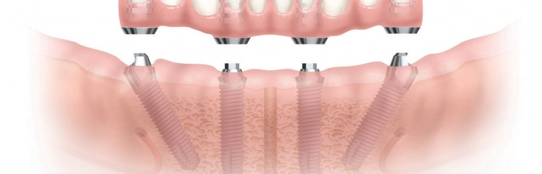

Dantų protezavimas - Šiuolaikiniai dantų protezai | Clinic DPC
 Skip to content lt en +370 632 00005 Klinikų kontaktai Mes Kodėl Clinic | DPC ? Komanda Laboratorija Partneriai Karjera Istorijos Paslaugos Kainos Pasiūlymai El. Parduotuvė Naujienos Klinikos +370 632 00005 Registracija lt en Visos paslaugosDantų protezavimas
Mūsų įvertinimas (5)Su pirmi 12 mėn. be pabrangimo
Daugiau Kas tai? Kada atlikti protezavimą Protezų rūšys DUK Registruotis vizitui RegistruotisDantų protezavimas – kas tai?
Esant dideliam danties kietųjų audinių praradimui, prastai estetikai, dantų nudilimams gaminami protezai (užklotai, vainikėliai, laminatės ir kt.) ant dantų. Visiškai netekus danties – protezuojama ant dantų implantų. Protezavimo metu atkuriamas danties estetinis vaizdas ir funkcija.
Kada reikėtų rinktis dantų protezavimą?
Protezavimas – tinkamiausias procedūra, kai dėl karieso pažeidimų, didelių nehermetiškų plombų, dantų nudilimo yra prarandamas didelis sveikų kietųjų dantų audinių kiekis. Taip pat dantų protezavimas rekomenduojamas po endodontinio danties gydymo – praradus danties gyvybingumą padidėja tikimybė danties sienelių ar šaknų lūžiams, skilimams.
Netekus danties pilnas danties vainikas gali būti atkuriamas protezuojant ant implantų
Dantų protezų rūšys
Protezai skirstomi į išimamus ir fiksuotus. Pastarieji – kur kas pranašesni. Skirtingai, nei išimami, fiksuoti protezai visiškai nesiskiria nuo natūralių dantų nei juos matančiam, nei pačiam pacientui. Idealus estetinis vaizdas ir komfortiškas pojūtis – tai, ko negali suteikti išimami protezai. Todėl esant galimybei visuomet rekomenduojame rinktis fiksuotus protezus.
Išimami protezai:
• Plokštelės standartinės, elastinės • Lanko atraminis protezas
Fiksuoti protezai ant dantų:
• Cirkonio keramikos vainikėliais (karūnėlėmis) • Metalo keramikos vainikėliais (karūnėlėmis) • Laminatėmis • Dantų protezų tiltais
Fiksuoti protezai ant implantų:
• Pavieniais vainikėliais (karūnėlėmis) • Viso žandikaulio atkūrimas fiksuotais protezaisBendradarbiaujame su Teritorinėmis ligonių kasomis
CLINIC | DPC yra sudariusi sutartį su visomis Teritorinėmis ligonių kasomis. Už klinikoje suteiktas protezavimo paslaugas galima atsiskaityti lėšomis skirtomis iš Privalomojo sveikatos draudimo fondo. Pagal šią tvarką, teisę į dantų protezavimą, kompensuojamą iš Privalomojo sveikatos fondo biudžeto, turi šie apdraustieji privalomuoju sveikatos draudimu:
• asmenys, kuriems sukako senatvės pensijos amžius; • vaikai; • nedarbingi arba iš dalies darbingi asmenys; • asmenys, kuriems buvo taikytas gydymas dėl burnos, veido ir žandikaulių onkologinės ligos.
Daugiau informacijos dėl dantų protezavimo paslaugų kompensavimą iš privalomojo sveikatos draudimo fondo rasite nuorodoje – http://www.vlk.lt/veikla/veiklos-sritys/sveikatos-prieziuros-paslaugos/dantu-protezavimas
Fiksuoti (neišimami) dantų protezai
Šiuo būdu vainikėliai (karūnėlės) yra pricementuojami prie dantų arba prisukami prie implantų. Fiksuotais protezais efektyviai atkuriama danties kramtymo funkcija ir estetinis vaizdas.Cirkonio keramikos vainikėliai (karūnėlės)
Protezuojant cirkonio keramika, išgaunamas gražus estetinis vaizdas, atitinkantis tikrų dantų išvaizdą. Protezo spalva yra vientisa ir natūrali. Cirkonis – biologiškai deranti su žmogaus organizmu medžiaga, todėl danties vainikėliai nesukelia alergijų ar kitų nepageidaujamų reakcijų. Vainikėliai naudojami tada, kai dantys stipriai pažeisti karieso, likę nedaug sveikų sienelių, yra didelių plombų.
Metalo keramikos vainikėliai (karūnėlės)
Dantų protezai iš metalo keramikos yra gaminami metalinį karkasą padengiant porceliano sluoksniu. Jeigu dantys labai pažeisti, su didelėmis plombomis, negyvi, juos tikslinga protezuoti pilnais vainikėliais, taip užtikrinant tvirtumą. Vainikėliai naudojami tada, kai dantys negyvi, stipriai pažeisti karieso, likę nedaug sveikų sienelių, yra didelių plombų.
Laminatės
Laminatės – tai plonytės keraminės plokštelės, dar vadinamos mikroprotezais,. Jos pricementuojamos prie dantų paviršiaus. Ši procedūra panaši į estetinį plombavimą, tik danties paviršių dengia ne plomba, o keramika. Taikomos tada, kai pacientas nori estetiškesnio vaizdo – yra daug senų, patamsėjusių plombų, parudę ar pageltę dantys, negraži forma, tarpai tarp dantų. Laminatės yra pakankamai tvirta, išlieka blizgios ir nekeičia atspalvio.
Dantų protezų tiltai
Jeigu yra daugiau trūkstamų dantų, juos galima atkurti tiltiniais protezais. Tokiu būdu pirmiausia pacientui apšlifuojami atraminiai dantys, ant jų fiksuojamas protezas, o viduryje tarp jų dedami dirbtiniai dantys. Tiltinės konstrukcijos galimos ir ant implantų.
Išimami dantų protezai
Išimamų dantų protezų privalumas – gana nedidelė protezavimo kaina, tačiau toks dantų protezavimo būdas negarantuoja ilgaamžiškumo ir, juo labiau, komforto. Pacientas visuomet jaučia, kad tai – ne jo natūralūs dantys, jaučiamas nepatogumas kramtant, o kartais ir psichologinis diskomfortas. Išimami protezai neapsaugo žandikaulio nuo jo nykimo, negarantuoja pakankamai geros kramtymo funkcijos, ir reikalauja nemažai priežiūros.Dantų plokštelės
Dantų plokštelės taikomos, kai pacientui trūksta visų arba dalies dantų. Plokštelės gaminamos iš rausvo plastiko pagrindo ir baltų dantų. Standartinės plokštelės prie nuosavų dantų prikabinamos kabliukais. Elastinės plokštelės yra patogesnės nei standartinės, nes nuo burnos ertmės šilumos protezas tampa lankstus ir lengvai pats prisitvirtina burnoje.
Lanko atraminis protezas
Šis metodas dažniausiai parenkamas, kai pacientui trūksta vieno ar kelių dantų. Pacientas prie atraminių protezų greičiau pripranta ir jie patogiau fiksuojasi nei minkštosios ir standartinės plokštelės. Lanko atraminiai protezai tvirtinami kabliukais ar užraktais prie sveikų paciento atraminių dantų.
Dažniausiai užduodami klausimai
Kaip išsirinkti tinkamiausius dantų protezus?
Dantų protezų pasirinkimas yra didelis. Konkrečius protezavimo gydymo būdus Jums pateiksime po konsultacijos mūsų klinikoje. Dažniausiai siūlomos dvi protezų rūšys – fiksuoti ant dantų arba implantų ir išimami protezai.Kaip prižiūrėti dantis po dantų protezavimo?
Mūsų klinikų specialistai visada atsakys į Jums rūpimus klausimus ir paaiškins kaip prižiūrėti dantis po kiekvienos procedūros. Fiksuoti protezai paprastai nereikalauja papildomos nei įprasta natūralių dantų priežiūra. Išimamus protezus, tokius kaip, pavyzdžiui, dantų plokšteles, reikia valyti po kiekvieno valgio, nes po jomis kaupiasi maisto likučiai ir kiti nešvarumai. Kas metus rekomenduojama atlikti profesionalią burnos higieną, turint implantus higiena turi būti atliekama kas 6 mėn.Kada yra taikoma dantų protezavimo procedūra?
Kai dantų vainikas yra stipriai pažeistas karieso, po endodontinio gydymo. Taikoma kaip alternatyva keičiant dideles dantų plombas, trūkstant vieno arba daugiau dantų, bedančių žandikaulių protezavimas, nudilusių dantų gydymui.Kokios paslaugų kainos?
Kiekvieno žmogaus atvejis yra skirtingas, tad kainą nustatome tik gerai išanalizavę paciento problemą. Susisiekite su mumis, kad galėtume nustatyti Jums tinkamiausią kainą. Teirautis kainosFinansavimas
Mūsų paslaugas galite įsigyti išsimokėtinai. Su SB lizingu pirmi 12 mėnesių be pabrangimo. Sužinokite apie sąlygasTeirautis kainos
Jei reikalinga skubi pagalba, skambinkite +370 632 00005Mūsų pacientai
Noreciau padėkoti gyd. Erikai už jos kruopštų darbą ir malonu aptarnavimą.
Asta, (5)Esu CLINIC|DPC pacientė. Prieš tai pabuvojau keliose Kaune esančiuose dantų kabinetuose, bet taip buvo, kad viskas baigdavosi nesėkmingai. Likimas atvedė į CLINIC|DPC , kur radau nuostabius gydytojus ir su šypsena pasitinkantį kolektyvą. Tokios jaukios ir gerą nuotaiką tik įėjus keliančios klinikos nebuvau radusi. Ačiū Jums, gerbiamieji , kad Jūs tokie esate, kur grąžinate mums šypseną. Labai džiaugiuosi, kad gydausi pas Jus. Dėkoju gyd. Simonui, kad savo šypsena ir nuoširdumu, vedate paskui save nuostabų kolektyvą.
Birutė, 65 m. (5)Širdingai dėkoju gydytojai Aistei Bingelytei ir jos naujai darbštuolei pagalbininkei. Esu labai dėkingas už profesionalumą, tikrai aukštą darbo kultūrą, kruopštumą, rūpestį. Ačiū!
Rolandas, 45 m. (5)Esu CLINIC|DPC pacientė. Prieš tai pabuvojau keliose Kaune esančiuose dantų kabinetuose, bet taip buvo, kad viskas baigdavosi nesėkmingai. Likimas atvedė į CLINIC|DPC , kur radau nuostabius gydytojus ir su šypsena pasitinkantį kolektyvą. Tokios jaukios ir gerą nuotaiką tik įėjus keliančios klinikos nebuvau radusi. Ačiū Jums, gerbiamieji , kad Jūs tokie esate, kur grąžinate mums šypseną. Labai džiaugiuosi, kad gydausi pas Jus. Dėkoju gyd. Simonui, kad savo šypsena ir nuoširdumu, vedate paskui save nuostabų kolektyvą.
Birutė, 65 m. (5)Komentarus ir atsiliepimus rašau išskirtinai retai. Tačiau po to, kaip šiandien buvau aptarnautas, neparašyti komentaro būtų tikra nuodėmė. Suteiktos paslaugos „world class services“ etalonas. Ačiū už punktualumą, profesionalumą ir komunikabilumą.
Raimundas, 35 m. (5)Puikiai atstatyta šypsena. Dėkoju visam CLINIC | DPC kolektyvui. 10/10 balų!
Nijolė, 45 m. (5)Naudojotės šia paslauga?
Parašykite asiliepimąĮvertinkite paslaugą
Dantų protezavimas atliekamas šiose klinikose:
Kauno klinika
Savanorių pr. 314 AKlaipėdos klinika
H.Manto g.3 / Vytauto g. 28Vilniaus klinika
Mindaugo g. 14Šiaulių klinika
Rūdės g. 17Mažeikių klinika
Žemaitijos g. 14-33Alytaus klinika
Pulko g. 5Utenos klinika
Aušros g. 14Anykščių klinika
Šaltupio g. 1Jurbarko klinika
Vytauto Didžiojo g. 5BRaseinių klinika
Vaižganto g. 1-3Londono klinika
775 Fulham roadRegistruokitės vizitui
Užsiregistruokite konsultacijai CLINIC | DPC klinikoje visoje Lietuvoje. Registruotis vizitui
Apie mus
Clinic DPC Kodėl Clinic | DPC ? Laboratorija Karjera Naujienos El. Parduotuvė Specialūs pasiūlymai Administracija Partneriai Privatumo politika RekvizitaiPaslaugos
Dantų implantavimas Dantų protezavimas Terapinis gydymas Estetinis plombavimas Dantų balinimas ir kapos Profesionali burnos higiena Burnos ir dantų chirurgija Protinio danties rovimas Dantų šaknų kanalų gydymas Ortodontinis gydymas Anestezija Vaikų dantų gydymas Veido kontūrų korekcija Rentgenologiniai tyrimaiKlinikos
Vilniaus klinika Kauno klinika Klaipėdos klinika Šiaulių klinika Panevėžio klinika Alytaus klinika Mažeikių klinika Utenos klinika Jurbarko klinika Raseinių klinika Anykščių klinika Londono klinika
+370 632 00005 konsultacija@clinicdpc.lt Registracija
Dėkojame, kad prisidedate prie šypsenų istorijų!
Nuo Jūsų įmokos už paslaugas skiriame 1% tiems kurie negali džiaugtis sveika ir gražia šypsena.
Šioje interneto svetainėje slapukus naudojame įvairiais su funkcionalumu, analize ir rinkodara susijusiais tikslais. Naršydami mūsų svetainėje Jūs patvirtinate, jog sutinkate su clinicdpc.lt slapukų politika. Sutinku Privatumo politika